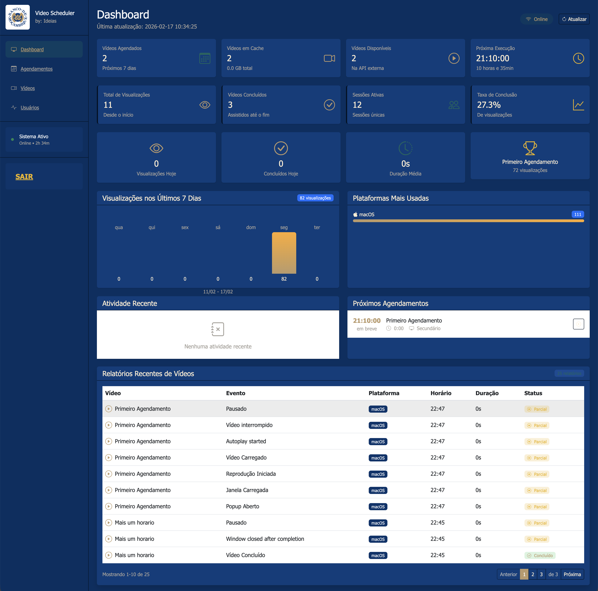

Manual Descritivo da Solução Mista de Disponibilização de Vídeos
Versão 1.2
1. Objectivo e âmbito
Esta solução integra Dashboard/API (Laravel) e Aplicação Desktop para distribuição e reprodução de vídeos em múltiplos postos de trabalho.
Foi concebida para operar em escala elevada, suportando mais de 50 000 utilizadores em ambientes Windows, macOS e Linux.
2. Arquitectura de referência
- Camada de gestão: Dashboard Web para operação e administração.
- Camada de serviços: API para autenticação, agenda e telemetria.
- Camada de execução: Aplicação Desktop em clientes finais.
- Armazenamento: base de dados relacional e directoria de vídeos.

3. Decisão operacional de autenticação
A aplicação desktop utiliza autenticação hardcoded para reduzir assistência técnica de login em centenas de instalações.
- Sem autenticação interactiva por utilizador final.
- Credenciais técnicas embebidas no binário.
- Rotação de credenciais requer novo build e redistribuição.
4. Instalação resumida
4.1 API + Dashboard (servidor)
- Instalar PHP, MySQL e servidor web compatíveis com Laravel.
- Configurar
.envcom base de dados, URL da aplicação e credenciais de API. - Executar migrações:
php artisan migrate. - Garantir escrita em
storage/ebootstrap/cache.
4.2 Aplicação Desktop (postos)
- Confirmar domínio final da API (ex.:
https://dominiodaapi.com). - Actualizar
BASE_URLhardcoded parahttps://dominiodaapi.com/api. - Compilar por sistema operativo (macOS, Windows, Linux).
- Instalar aplicação com pacote gerado para cada plataforma.
5. Operação diária
- Publicar/actualizar vídeos no Dashboard.
- Criar ou rever agendamentos activos.
- Executar sincronização e confirmar estado da API.
- Monitorizar relatórios de reprodução e erros.

6. Publicação da documentação
A documentação integral deve estar servida pela API em:
https://dominiodaapi.com/documentacaohttps://dominiodaapi.com/documentacao/*
Isto inclui o manual da app desktop (Electron).
7. Boas práticas para escala (50 000+ utilizadores)
- Distribuir a API por múltiplas instâncias atrás de balanceador.
- Separar base de dados de escrita e leitura quando aplicável.
- Utilizar cache para respostas frequentes de agenda e metadados.
- Aplicar monitorização central de latência, erros e saúde de clientes.
- Definir janelas de manutenção e política de rollback.
8. Segurança e conformidade
- Forçar HTTPS/TLS entre clientes e API.
- Rodar chaves de API periodicamente.
- Restringir permissões por perfil (Administrador, Manager, Operador).
- Guardar logs de auditoria de criação, edição e eliminação.